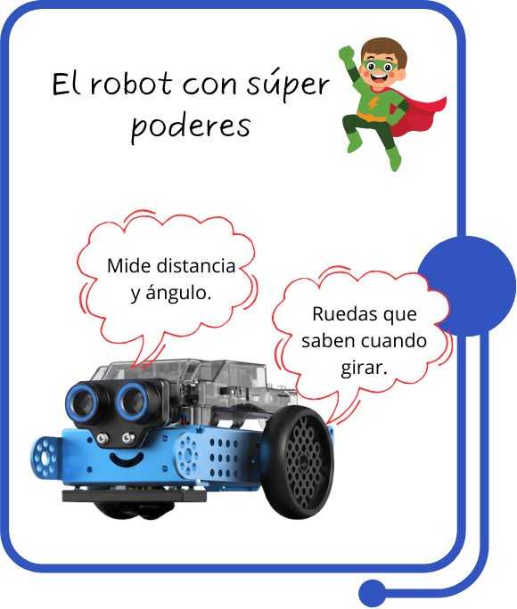
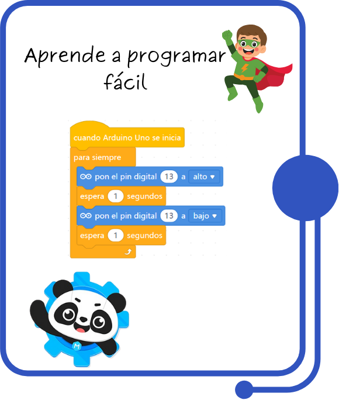
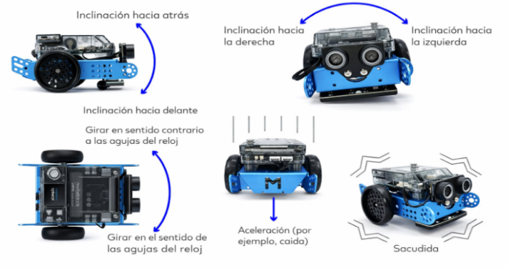
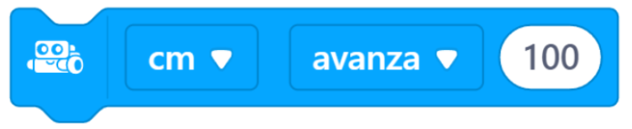
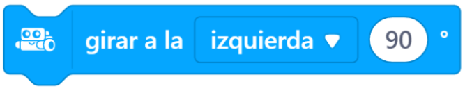

Tema 1. Movimiento del robot

El mBot2 puede moverse con mucha precisión porque sus motores saben cuánto avanza y cuánto gira, esto permite que el robot camine exactamente los centímetros que le decimos y gire los grados correctos.
Tipos de movimientos y orientación del robot

Bloques clave
En mBlock, estos bloques clave sirven para controlar con precisión el movimiento del mBot2, permitiendo programar desplazamientos y giros exactos.
Mover adelante ( ) cm
Permite desplazar el robot hacia adelante una distancia precisa expresada en centímetros.

Mover atrás ( ) cm
Ordena al robot retroceder midiendo la distancia recorrida con los motores encoder.
Girar ( ) grados
Hace que el mBot2 gire a la derecha o a la izquierda un número exacto de grados (ej. 90°, 180°).

Detener motores
Detiene completamente el movimiento del robot en cualquier momento del programa.